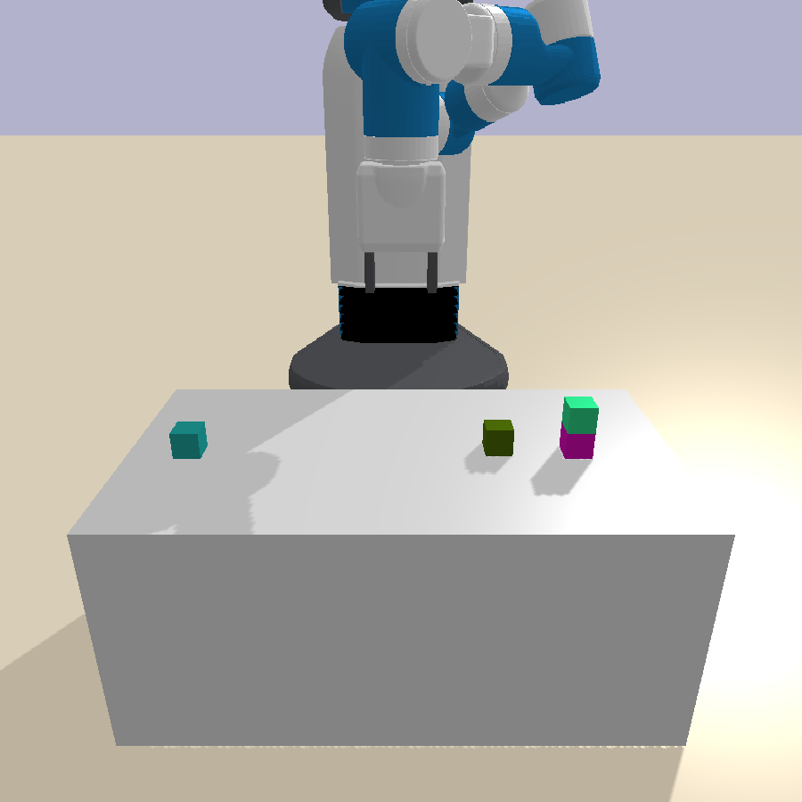
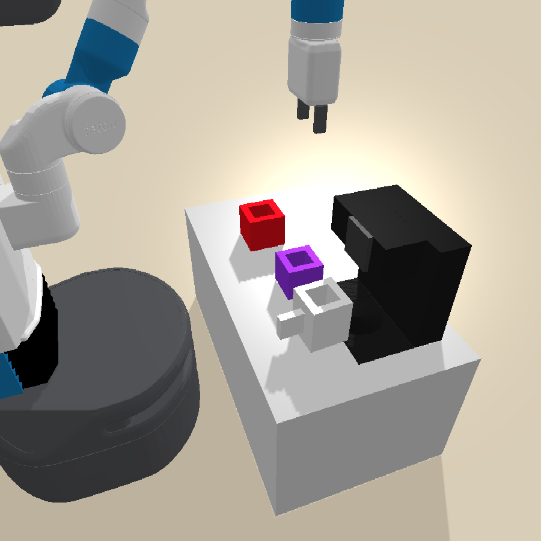
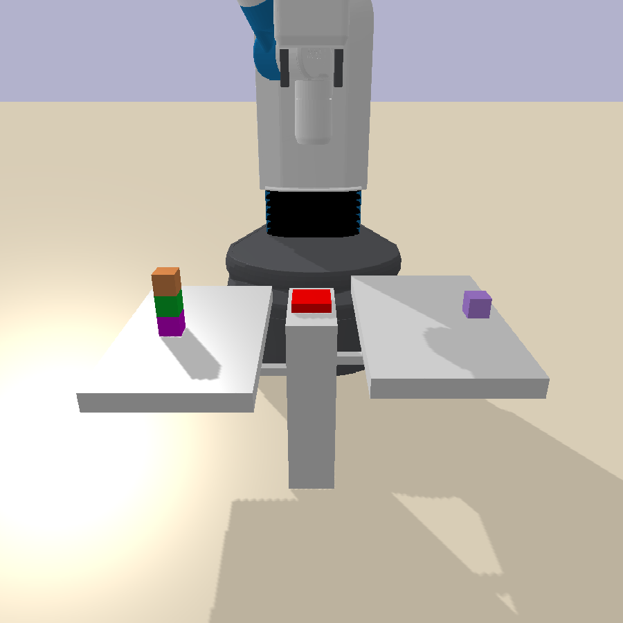

Dat & Yichao
The running example: a kitchen with a jug, a faucet, a burner.
JugAtFaucet(jug), is an atom: the abstract state is the set of atoms currently true.PickJugFromFaucet(robot, jug) pre: HandEmpty · JugAtFaucet(jug) add: Holding(jug) del: HandEmpty · JugAtFaucet(jug)
PickJugFromFaucet, one level down: a motion controller with continuous parameters (the grasp pose, the approach path). The operator names it; the skill runs it.Bilevel planning. Every iteration keeps this frame and changes what the abstraction can express.



Blocks, coffee, balance: the environments as the robot sees them (VisualPredicator, arXiv:2410.23156).
On, OnTable).
On(a, b) or Clear(x) from pixels?class NSPredicate:
# a VLM answers the classifier over raw visual state
def holds(self, state, objs) -> bool:
return vlm_query(
state.image,
f"Is {objs[0]} inside {objs[1]}?")
# proposed as Python code, not read from featuresClear(x) from On(x,y)), transitive closure and disjunction (OnPlate from DirectlyOn chains). It runs at every round, before #1 or #2. Derived predicates may appear in preconditions, never in postconditions.Boil water with jugs: the water fills and heats while the robot is busy elsewhere.
Holding) and the agent's own actions as endogenous processes. Plus 1-2 demonstrations (act 1 had none).
FaucetOn ___/‾‾‾‾‾‾‾‾‾‾‾‾‾‾‾ (rising edge: trigger)
delay |<-- sampled -->|
JugFilled ________________/‾‾‾ (effect lands...)
overall ‾‾‾‾‾‾‾‾‾‾‾‾‾‾‾‾‾‾‾‾ (...only if it survived)Trigger on a rising edge, wait a sampled delay, and the effect lands only if the overall condition held through the window. Break it early (turn the faucet off) and the effect is cancelled.
JugFilled flips a few steps after the faucet turns on, but not the law volume += rate, so refinement still leans on a ground-truth simulator it did not learn.train_task_idx. The boil demo path: PickJug → Place(faucet) → SwitchFaucetOn → Wait → PickJug → Place(burner) → SwitchBurnerOn → Wait. Its transitions over the continuous features are the system-identification dataset. plus interaction trajectoriesinteraction trajectoriesSame form, collected during online learning by planning with the current model and executing; some fail to reach the goal. They visit regimes the tidy demos never do (overfills, spills), exactly where the sysID needs data., failures kept as counterexampleshow failures helpThe agent can call the black-box goal check is_goal_state(state, task_idx) to sort goal-reaching from failed runs. A failed trajectory is a counterexample: a place where its rule or predicate said "this should work" and the env disagreed, pinpointing what to fix.. skill: motion planning.
simulator.py), the predicates (predicates.py), and posteriors over the constants.
def fill_rule(s, p):
if s.faucet_on:
s.water = min(s.water + p.fill_rate,
p.jug_full_level)
return sdef JugFilled(s, p):
return s.water >= p.jug_full_levelJugFilled thresholds on the very jug_full_level that fill_rule saturates toward. The question "will the predicate and the dynamics disagree" cannot arise: they are the same numbers.$$ p(\theta \mid \mathcal{D}) \;\propto\; \exp\!\left(-\tfrac{1}{2\sigma^2}\textstyle\sum_t \lVert x_{t+1} - f_\theta(x_t) \rVert^2\right)\, p(\theta) $$
A sum-of-squared-errors likelihood over the residual, a boxed prior on each named constant. Fit with emcee MCMC or a Levenberg-Marquardt MAP with Laplace covariance.
A basic pick and place transferred to a real Franka.